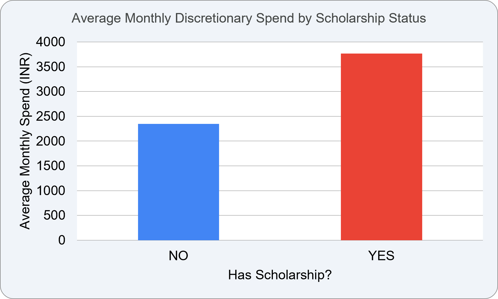
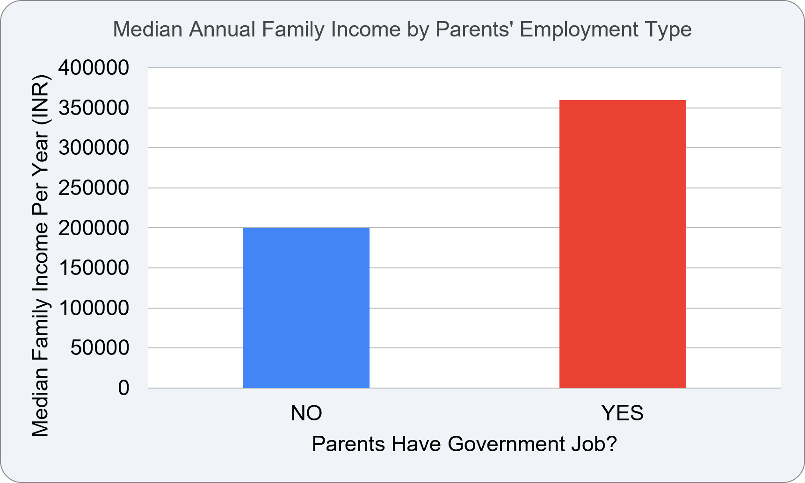
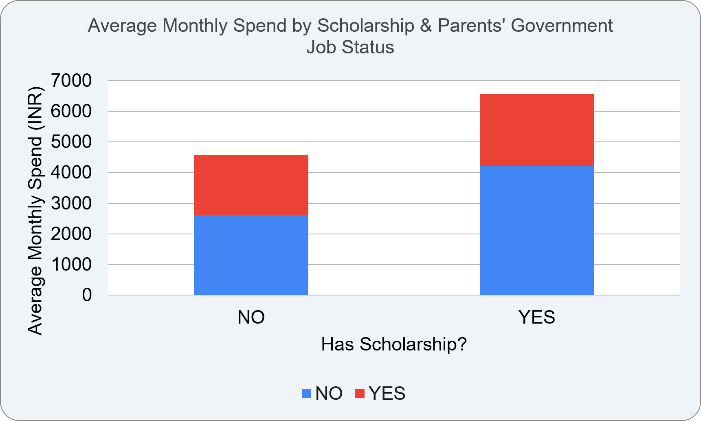

Data Collection and Analysis by
Md. Mazidul Islam
B.Sc. Statistics (1st Semester)
Pachhunga University College
This project analyzes spending behaviour, scholarship status, family income and parental employment using survey responses collected from 122 students. The objective is to identify relationships between scholarships, family background and monthly discretionary spending through descriptive statistical analysis and visualization.
Note: Student Name was excluded to preserve participant privacy.

Students receiving scholarships spend considerably more every month than students without scholarships.

Government-employed families generally report higher annual incomes.

| Category | Average Monthly Spending |
|---|---|
| Non-Govt + Scholarship | ₹4,225 |
| Govt + Scholarship | ₹2,333 |
| Non-Govt + No Scholarship | ₹2,603 |
| Govt + No Scholarship | ₹1,971 |
The findings indicate that scholarship assistance meaningfully improves students' financial well-being. Although government-employed families tend to have higher incomes, scholarships provide the greatest benefit to students from non-government-employed households by increasing their monthly discretionary spending.